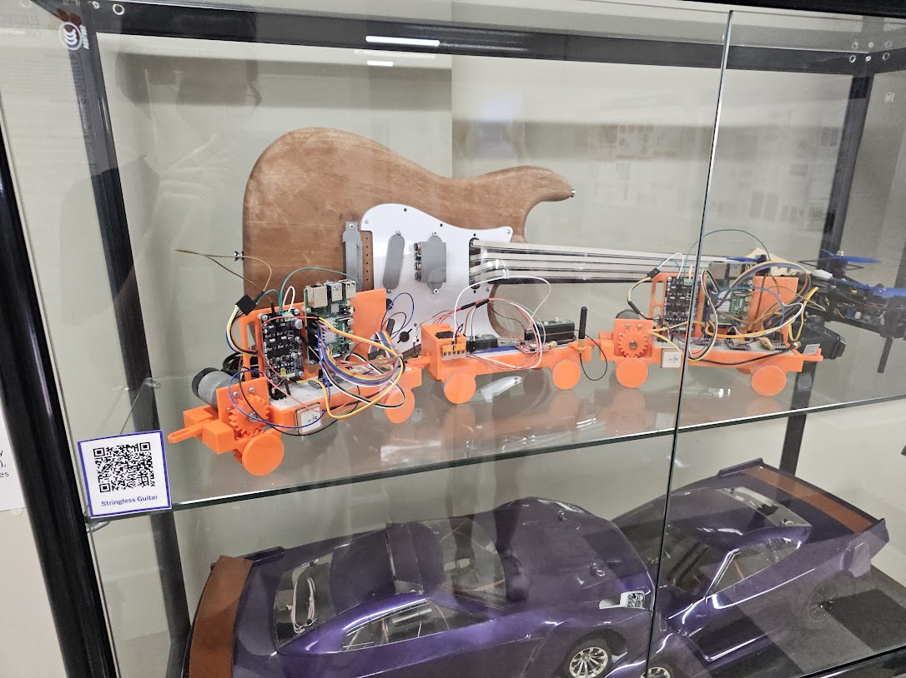
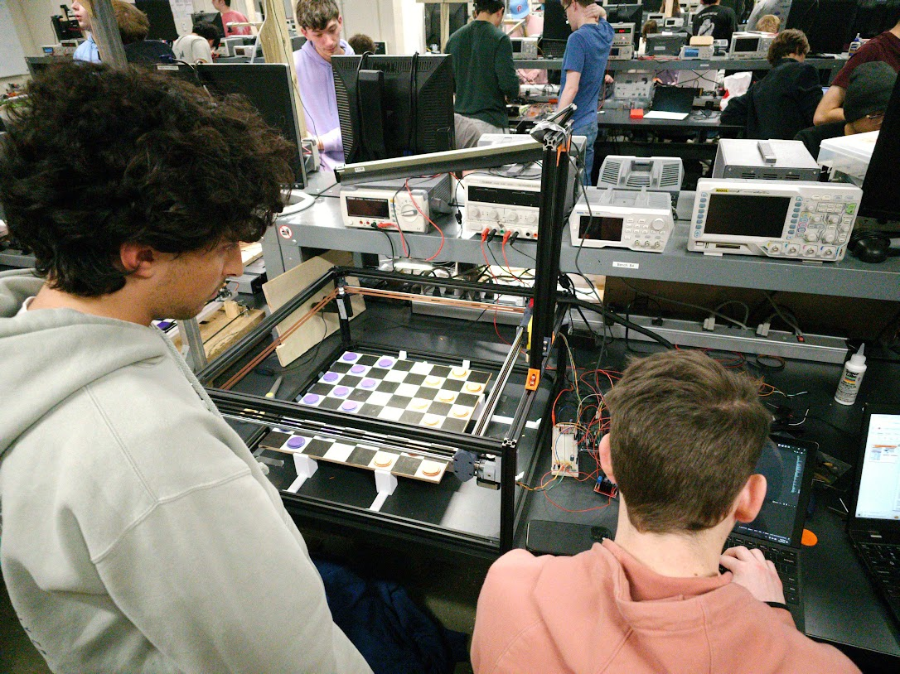
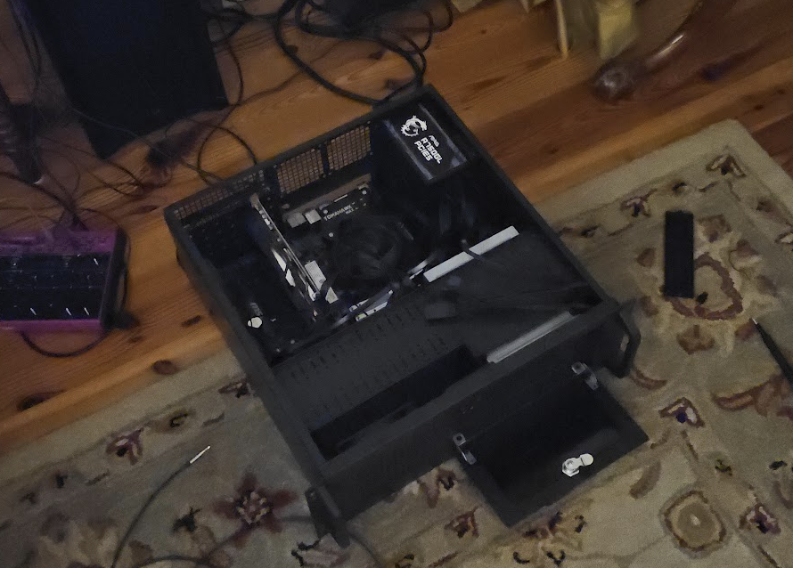

Projects:
Academic:
LoRa Radio Frequency Train Braking System, Senior Design II Aeronix

- Collaborating within a group of 4 Electrical and 4 Computer Engineering students to create a dynamic Train Car braking system within a mesh network powered by LoRa Radio Frequency technology for low power consumption
- Each module in the mesh network will have GPS integration and use an inertial measurement unit (IMU) to communicate the speed of each train car to ensure safe braking
Checkers Playing Robot, Senior Design I

- Collaborating within a group of 3 Electrical and 2 Computer Engineering students to create a robot that plays checkers with a human and allows the human player to physically move pieces.
- The robot uses image recognition to recognize board updates and uses TensorFlow AI to decide the best possible move.
- The robot uses the CoreXY theory for smooth 8-directional movement.
Personal:
HomeLab Self Hosted Server

I built the server that hosts this website that you are currently on. Each service running on this server is within docker containers.
Technical Specs:
- Ubuntu 24.04 LTS
- CPU: AMD Ryzen 5 1600
- Intel ARC A380 6GB
- MSI B450 Tomahawk Max
- 32 GB DDR4 Memory
- 120 GB M.2 NVME SSD
- 8TB HDD, plan for expansion to multidrive RAID 5
Networking:
Server is connected to internet wirelessly and tunneled into a Virtual Private Server. Then all docker containers being exposed to internet are reverse proxied by Caddy on VPS.
Homemade Arduino Leonardo Drumpad

Homemade DJ Drumpad made from an Arduino Leonardo, Push buttons and Capacitive Sensors. Compatible with popular DAWs